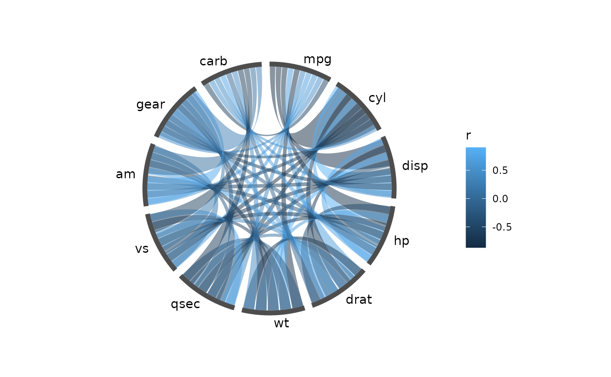
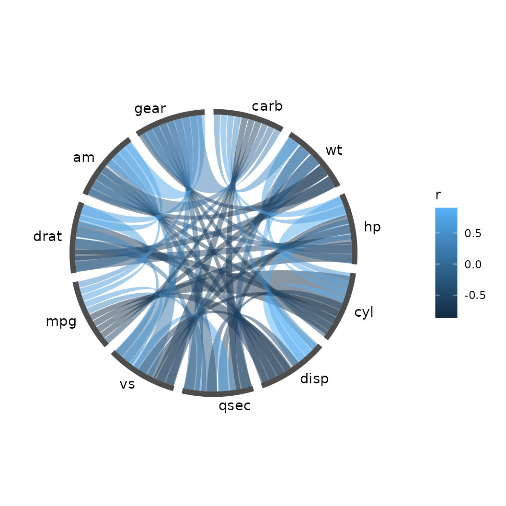
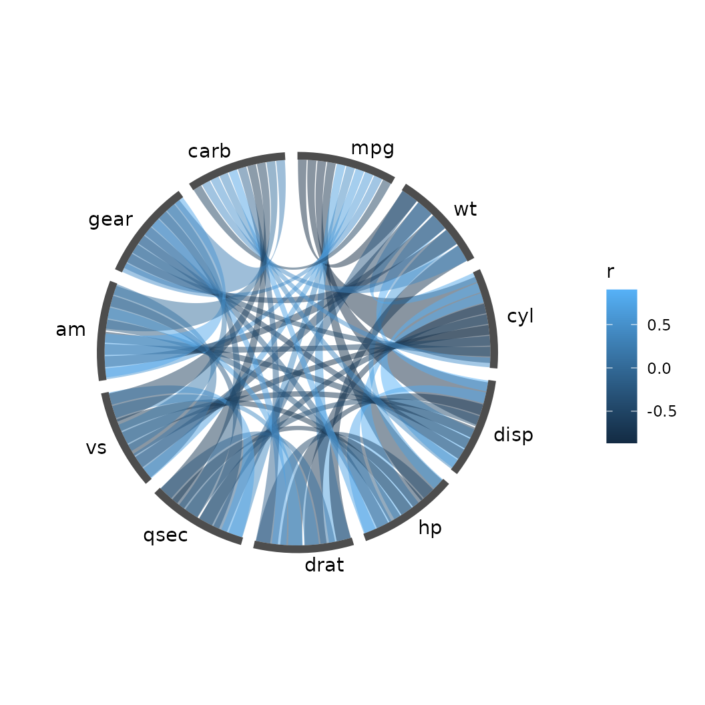
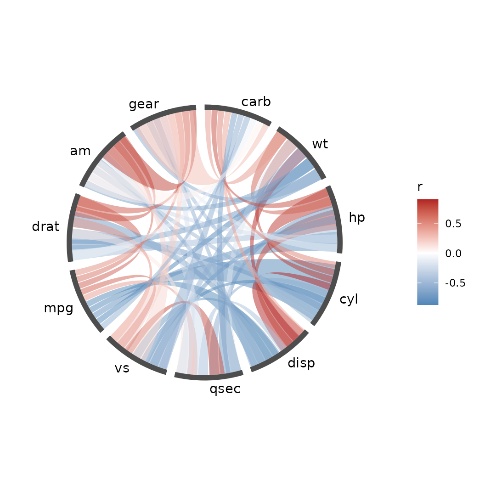
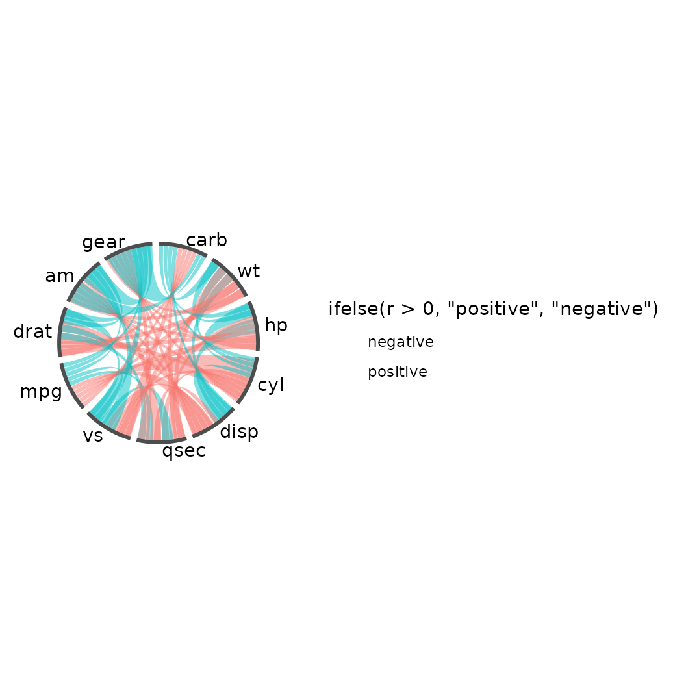
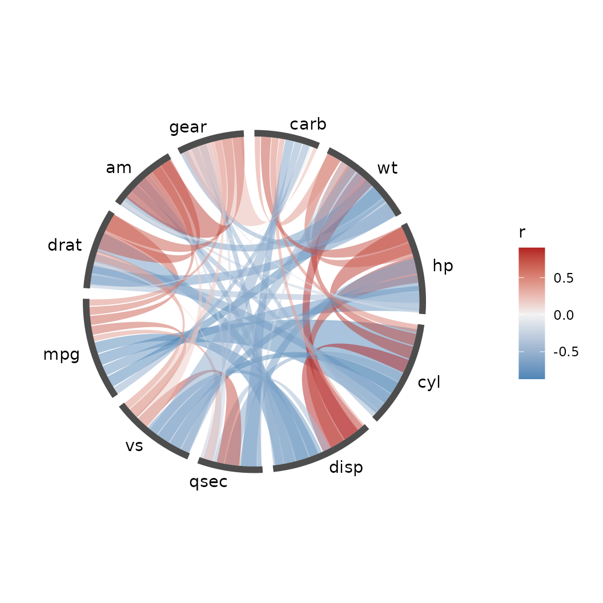
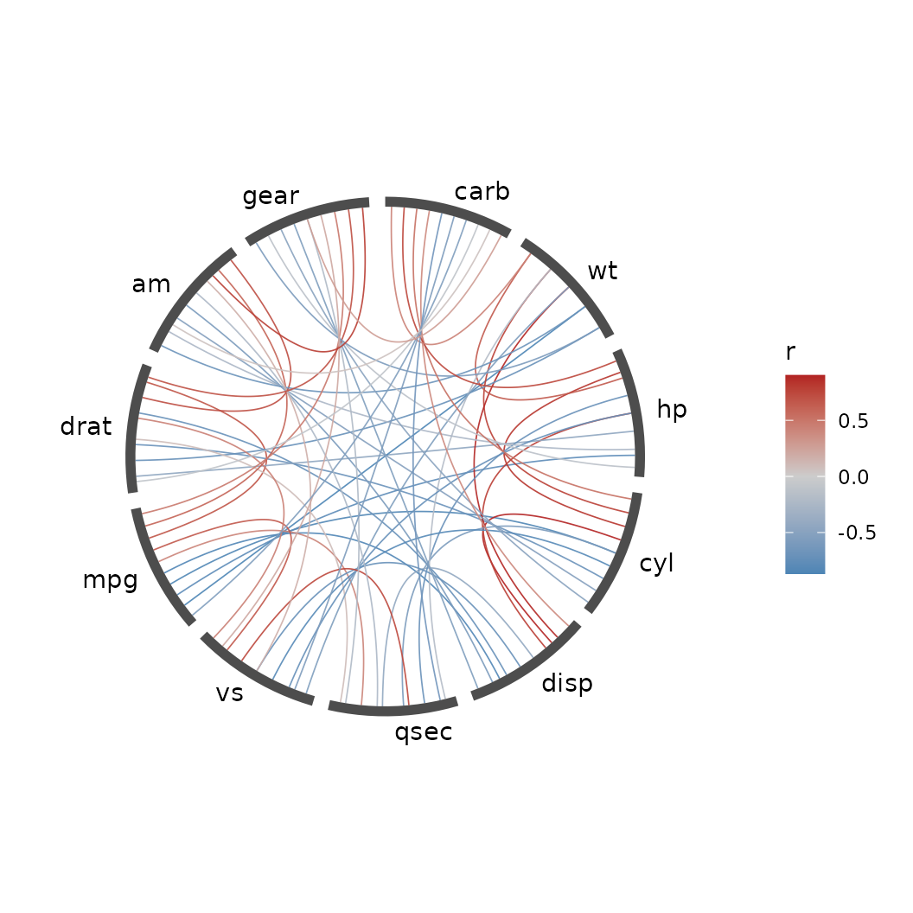
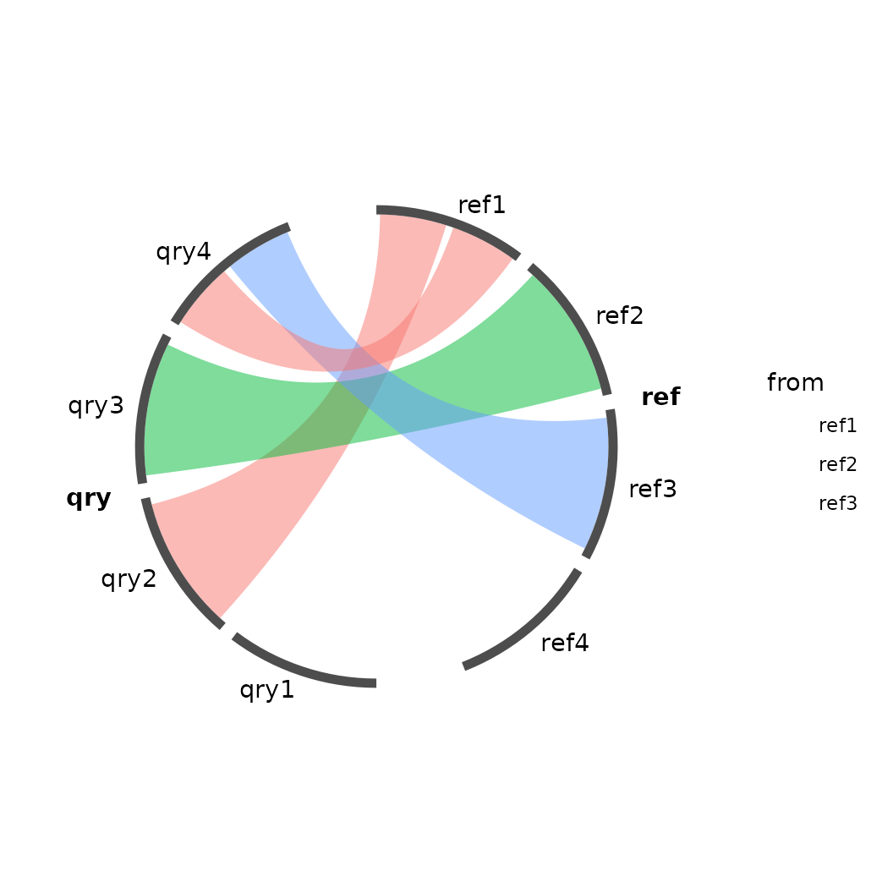
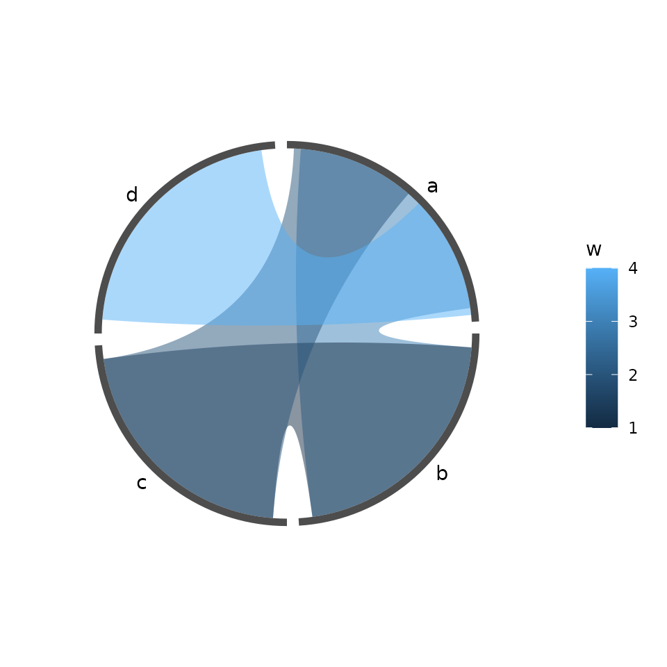
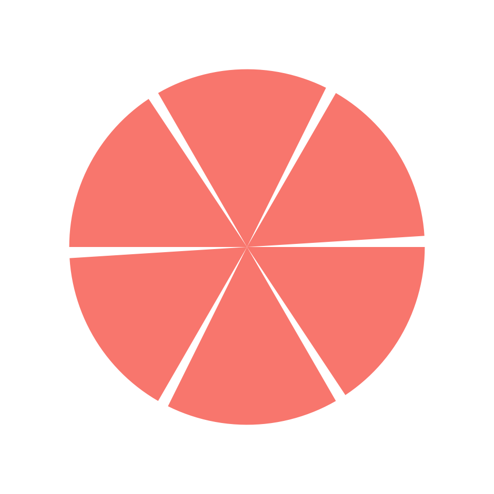

knitr::opts_chunk$set(echo = TRUE, collapse = TRUE, comment = "#>")
library(ggcircos)
library(ggplot2)
set.seed(42)What a chord diagram is here
Each node owns an arc of the circle. Each link owns a slot inside the arc of every node it touches, and is drawn as a ribbon between its two slots. The arc width is proportional to the number of links a node carries — not to the value of those links — so a busy node gets a wide arc and its links fan out inside it. The value belongs to the ribbon’s colour, not its foot.
ggcircos computes all of that once, into a plain table:
lay <- circos_layout(cor(mtcars), order = "hclust")
head(layout_nodes(lay))
#> id label sector order n_links theta0 theta1 theta width r
#> 1 carb carb all 1 10 0.0000000 0.5083668 0.2541834 0.5083668 1
#> 2 wt wt all 2 10 0.5711987 1.0795655 0.8253821 0.5083668 1
#> 3 hp hp all 3 10 1.1423973 1.6507641 1.3965807 0.5083668 1
#> 4 cyl cyl all 4 10 1.7135960 2.2219628 1.9677794 0.5083668 1
#> 5 disp disp all 5 10 2.2847947 2.7931615 2.5389781 0.5083668 1
#> 6 qsec qsec all 6 10 2.8559933 3.3643601 3.1101767 0.5083668 1Every geom in the package reads this table. None of them recompute it. That one decision is what makes the rest of this vignette — and facets, scales and legends — work the way they do in ggplot2.
The thirty-second version
ggcircos(cor(mtcars), order = "hclust") +
geom_chord(aes(fill = r)) +
geom_node_arc() +
geom_node_text()
A chord diagram of the mtcars correlation matrix.
Line by line:
-
ggcircos(cor(mtcars), order = "hclust")builds the layout from the matrix and returns a plainggplotobject. It draws nothing itself. -
geom_chord(aes(fill = r))draws one ribbon per link, filled by the correlation valuer(a matrix is turned into links with columnsfrom,to,r). -
geom_node_arc()draws the node ring just outside the circle of links. -
geom_node_text()puts the node labels outside the ring.
The legend appeared without being asked for, because
fill is a normal ggplot2 aesthetic.
Ordering the nodes
The order of the arcs is the layout’s only real degree of freedom. Three ways to set it:
# 1. input order (the default)
ggcircos(cor(mtcars)) + geom_chord(aes(fill = r)) + geom_node_arc() + geom_node_text()
# 2. hierarchical clustering of the matrix
ggcircos(cor(mtcars), order = "hclust") +
geom_chord(aes(fill = r)) + geom_node_arc() + geom_node_text()
Nodes ordered by hierarchical clustering: correlated variables end up adjacent.
# 3. an explicit vector of node ids — it must list every node exactly once
ggcircos(cor(mtcars), order = c("mpg", "wt", "cyl", "disp", "hp", "drat",
"qsec", "vs", "am", "gear", "carb")) +
geom_chord(aes(fill = r)) + geom_node_arc() + geom_node_text()
An explicit order vector: the strongest correlations are pulled together by hand.
order = "hclust" clusters the matrix and lays the leaves
out around the circle. For a correlation matrix this is almost always
what you want: the blocks of variables that move together become
adjacent arcs, and the ribbons stop crossing the whole circle.
What the order actually changed, as data:
a <- layout_nodes(circos_layout(cor(mtcars)))
b <- layout_nodes(circos_layout(cor(mtcars), order = "hclust"))
data.frame(input_order = paste(a$id, collapse = " "),
hclust_order = paste(b$id, collapse = " "))
#> input_order
#> 1 mpg cyl disp hp drat wt qsec vs am gear carb
#> hclust_order
#> 1 carb wt hp cyl disp qsec vs mpg drat am gearColouring by value
aes(fill = r) maps a continuous variable; any ggplot2
fill scale works, and the legend is automatic:
ggcircos(cor(mtcars), order = "hclust") +
geom_chord(aes(fill = r)) +
scale_fill_gradient2(low = "steelblue", mid = "white", high = "firebrick",
midpoint = 0, name = "r") +
geom_node_arc() + geom_node_text()
A diverging scale: positive correlations warm, negative cool.
A discrete mapping is just as ordinary:
m <- cor(mtcars)
ggcircos(m, order = "hclust") +
geom_chord(aes(fill = ifelse(r > 0, "positive", "negative"))) +
geom_node_arc() + geom_node_text()
Ribbons coloured by sign, a factor-level fill.
One caveat worth knowing: a continuous fill is quantised into batches before drawing (so a 500-link diagram is a few dozen grobs, not 500). Each batch draws with one exact colour, at most 8/255 off any member. Visually indistinguishable; bit-for-bit not identical.
Letting the values drive the geometry
By default every node gets the same arc and every link the same share of it: the layout only knows which nodes are connected, and the value shows up as colour. That is the right picture when a link is a relationship and all relationships count the same.
circlize::chordDiagram() does the opposite: a node’s arc
is proportional to the weight it carries, and a link’s width is
proportional to its own value. weight = switches ggcircos
to that behaviour:
ggcircos(cor(mtcars), order = "hclust", weight = r) +
geom_chord(aes(fill = r)) +
scale_fill_gradient2(low = "steelblue", mid = "grey95", high = "firebrick",
midpoint = 0, name = "r") +
geom_node_arc() +
geom_node_text()
weight = r: node arcs and link widths now follow the correlations, as chordDiagram() does.
Read the difference off the ring: without weight every
variable owns 2*pi/11 of the circle; with it
cyl, disp and mpg are wide and
am, qsec are thin, because that is how much
correlation they carry. Negative values count by magnitude, so a strong
negative correlation is a wide link too.
nd <- layout_nodes(circos_layout(cor(mtcars), order = "hclust", weight = "r"))
round(setNames(nd$width / sum(nd$width), nd$id), 3)
#> carb wt hp cyl disp qsec vs mpg drat am gear
#> 0.070 0.103 0.099 0.114 0.111 0.069 0.091 0.110 0.086 0.075 0.072weight names a column of the link table. A matrix
supplies r; for a link data frame pass whichever column
holds the value, e.g. weight = "pident" (or unquoted,
weight = pident).
Ribbons or curves
ggcircos(cor(mtcars), order = "hclust") +
geom_chord(aes(colour = r), type = "line") +
scale_colour_gradient2(low = "steelblue", mid = "grey80", high = "firebrick",
midpoint = 0) +
geom_node_arc() + geom_node_text()
type = “line”: the same slots, drawn as curves.
type = "line" keeps the slot geometry — each link still
leaves its node at its own slot — but draws a curve instead of a filled
ribbon. With many links it stays readable where ribbons turn into mud.
curvature controls how far the ribbon bulges toward the
centre; the default "auto" scales it with the angular
distance between the two ends.
Sectors
A sector is a group of nodes drawn with a wider gap around it — the
way circlize groups chromosomes. Pass a nodes table with an
id column and a column naming the sector, then point
sectors at it:
nodes <- data.frame(
id = c(paste0("ref", 1:4), paste0("qry", 1:4)),
genome = rep(c("ref", "qry"), each = 4)
)
links <- data.frame(
from = c("ref1", "ref2", "ref3", "ref1"),
to = c("qry2", "qry3", "qry4", "qry4")
)
ggcircos(links, nodes = nodes, sectors = "genome") +
geom_chord(aes(fill = from)) +
geom_node_arc() +
geom_node_text() +
geom_sector_label()
Two sectors (ref / qry) with a wider gap between them.
geom_sector_label() labels the sector, not the node; it
uses the ring-contiguous run of each sector’s nodes, which is why a
sector that straddles the start angle still gets one label at its
middle.
Other input shapes
A link table is the general form — a matrix is just a shortcut for one:
head(data.frame(from = "mpg", to = "wt", r = cor(mtcars)["mpg", "wt"]))
#> from to r
#> 1 mpg wt -0.8676594Graph objects work directly:
g <- igraph::graph_from_data_frame(
data.frame(from = c("a", "b", "c", "d"),
to = c("b", "c", "a", "a"),
w = c(3, 1, 2, 4))
)
ggcircos(g) + geom_chord(aes(fill = w)) + geom_node_arc() + geom_node_text()
An igraph object: the same layout machinery, fed from a graph.
tidygraph::tbl_graph works the same way. What the
package reads natively is: a square symmetric matrix, a data frame with
from/to, an igraph or tbl_graph object.
Anything else becomes one of those three before the layout sees it.
The links are all these have to offer. A node can also carry
a range – a gene on a chromosome, a confidence interval, a period –
drawn in a band around the ring. That is a track, and it takes
xmin/xmax instead of a single value:
vignette("tracks"), section “Genomic intervals”.
Getting the layout back as data
The layout is not hidden inside the plot.
circos_layout() returns it, and the layout_*()
accessors return plain data frames:
lay <- circos_layout(cor(mtcars)[1:6, 1:6], order = "hclust")
layout_nodes(lay)
#> id label sector order n_links theta0 theta1 theta width r
#> 1 mpg mpg all 1 5 0.000000 0.9843657 0.4921828 0.9843657 1
#> 2 drat drat all 2 5 1.047198 2.0315632 1.5393804 0.9843657 1
#> 3 wt wt all 3 5 2.094395 3.0787608 2.5865780 0.9843657 1
#> 4 hp hp all 4 5 3.141593 4.1259584 3.6337755 0.9843657 1
#> 5 cyl cyl all 5 5 4.188790 5.1731559 4.6809731 0.9843657 1
#> 6 disp disp all 6 5 5.235988 6.2203535 5.7281706 0.9843657 1
head(layout_links(lay))
#> from to r self_loop .circos_w .circos_from_arc .circos_to_arc
#> 1 mpg cyl -0.8521620 FALSE 1 1 5
#> 2 mpg disp -0.8475514 FALSE 1 1 6
#> 3 cyl disp 0.9020329 FALSE 1 5 6
#> 4 mpg hp -0.7761684 FALSE 1 1 4
#> 5 cyl hp 0.8324475 FALSE 1 5 4
#> 6 disp hp 0.7909486 FALSE 1 6 4
#> edge_id theta0 theta1 theta theta_end0 theta_end1 theta_end x
#> 1 1 0.6004631 0.7776489 0.6890560 4.238008 5.123938 4.680973 1
#> 2 2 0.7973362 0.9745220 0.8859291 5.260597 5.703561 5.482079 1
#> 3 3 4.9393690 5.1608513 5.0501102 5.752780 6.195744 5.974262 1
#> 4 4 0.4035899 0.5807758 0.4921828 3.157999 3.453308 3.305654 1
#> 5 5 4.6932776 4.9147599 4.8040188 3.486121 3.781430 3.633776 1
#> 6 6 5.9086376 6.2039474 6.0562925 3.814243 4.109552 3.961897 1
#> y xend yend .circos_node_width .circos_loop_depth
#> 1 0.6890560 1 4.680973 0.9843657 0.5
#> 2 0.8859291 1 5.482079 0.9843657 0.5
#> 3 5.0501102 1 5.974262 0.9843657 0.5
#> 4 0.4921828 1 3.305654 0.9843657 0.5
#> 5 4.8040188 1 3.633776 0.9843657 0.5
#> 6 6.0562925 1 3.961897 0.9843657 0.5Every column the geoms use is there:
theta0/theta1 are the node’s arc, and a link’s
theta0/theta1 are the two slots it occupies.
You can filter it, join it, or feed it to your own geoms:
nd <- layout_nodes(lay)
ggplot(nd, aes(xmin = 1, xmax = 1.04, ymin = theta0, ymax = theta1)) +
geom_rect(aes(fill = sector)) +
coord_circos(limits = c(0, 2 * pi)) +
theme_circos(legend.position = "none")
A hand-drawn node ring: geom_rect() over the layout table, no package geoms.
This is the whole point of the design: the layout is data, the geoms are consumers, and you are allowed to be one too.
What this does not do yet
- No angular (clock) axis:
geom_track_axis()is a radial ruler. - Self-loops (
from == to) needself_loops = TRUE; by default they are dropped with a message. With it, they are drawn as loops folded toward the centre (seevignette("from-circlize")). - The y (angle) scale is fixed to
[0, 2*pi]by the layout. Replacing it breaks angles, and the coordinate warns when you do.